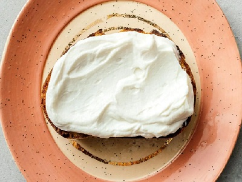
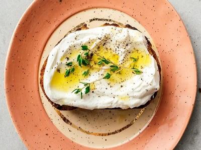

Breakfast and Brunch
Ricotta Toast Recipe
Move over avocado toast, ricotta toast is here to stay.

Move over avocado toast, ricotta toast is here to stay. It’s creamy, full of protein, and the best base for customizing. Ricotta toast is the perfect way to start your day, as a light lunch, or snack. I love that you can put anything onto it and I love how luxurious yet light it is. I’m a huge fan of toast and ricotta toast, especially whipped ricotta toast is my absolute favorite.

What is ricotta toast?
It’s as simple as the name: it’s ricotta on toast. I’m not too sure where it came from, it’s just about as simple as butter on toast, but so much more luxurious and better. If it’s your first time having ricotta toast, I recommend a really good slice of bread, toasted until it’s golden with a couple of deeply caramelized spots, topped off with creamy whipped ricotta, a drizzle of extra virgin olive oil, flaky sea salt, and freshly cracked pepper. The mild creaminess of the whipped ricotta just about melts into the toast and is deliciously light yet luxurious against the crunch of toast. The beauty of ricotta toast is that you can top it with anything, sweet or savory.
What is the best bread for toast?
I love all bread but for ricotta toast I recommend a hearty loaf like sourdough. You want something with structure and crunch. There are so many amazing sourdough bakeries out there right now and if you have the time and inclination, you can even make your own – it’s magic! Good sourdough isn’t sour, it’s perfectly balanced, complex, and the best base for topping. If you don’t have access to really good sourdough and don’t want to make your own, try whipped ricotta toast on slices of a crusty country loaf, a hearty whole wheat bread, or even bagels. Whipped ricotta also tastes amazing on pancakes or waffles.

What is ricotta?
Ricotta is an cheese, originally made in Italy but now available worldwide. It’s a soft, creamy cheese with small curds that are mild and slightly sweet. It’s fluffy, fresh, and creamy. You’ll find it in tubs in the refrigerated section and it tastes amazing with pasta, as a base for dips, on pizza, and in desserts.

How to make whipped ricotta
To make whipped ricotta, start with whole milk ricotta and add it to a food processor (we have this one and it’s lasted us years). Blend until the ricotta is creamy, fluffy, and smooth, about 1-2 minutes. You can season it with salt and pepper right away but I like to leave it plain so I have the option of using it as a base for both sweet and savory toasts. Whipped ricotta will keep in the fridge, tightly covered, for up to 3 days.

Ricotta toast variations
Classic ricotta toast
1.Spread a generous amount of whipped ricotta on toasted sourdough, then drizzle with extra virgin olive oil and balsamic (if desired) and finish with flaky sea salt and freshly cracked black pepper.
Honey and thyme ricotta toast
2.Spread a generous amount of whipped ricotta on toasted sourdough, then drizzle with a generous amount of honey and finish with fresh thyme. Pro tip, a sprinkle of flaky sea salt takes this over the top!
Avocado ricotta toast
3.Spread a generous amount of whipped ricotta on toasted sourdough, top with slices of avocado, a drizzle of extra virgin olive oil, flaky salt, pepper, and herbs, if desired.
 cinnamon-rolls
cinnamon-rolls